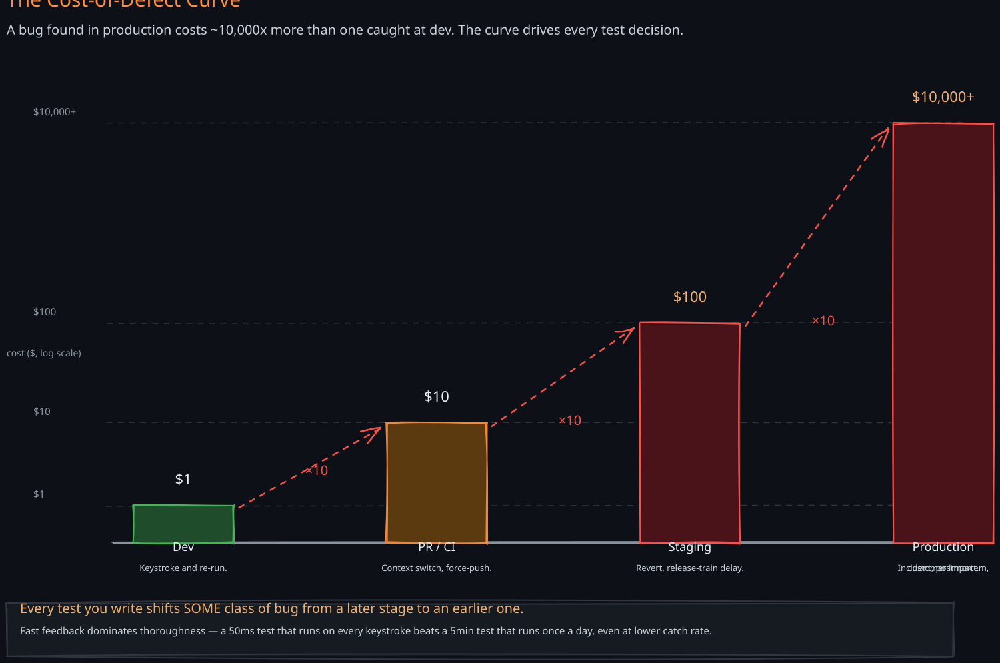
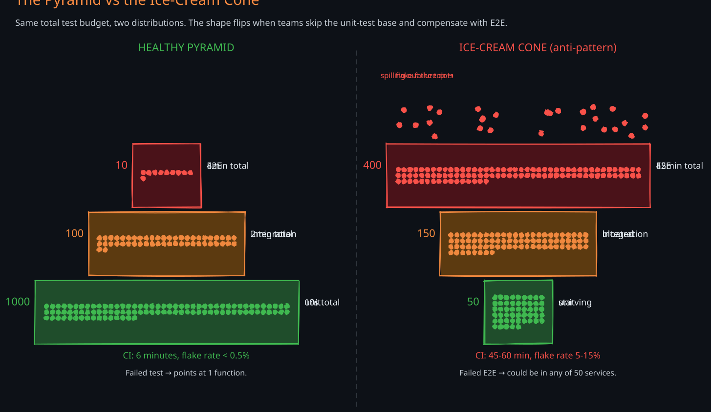
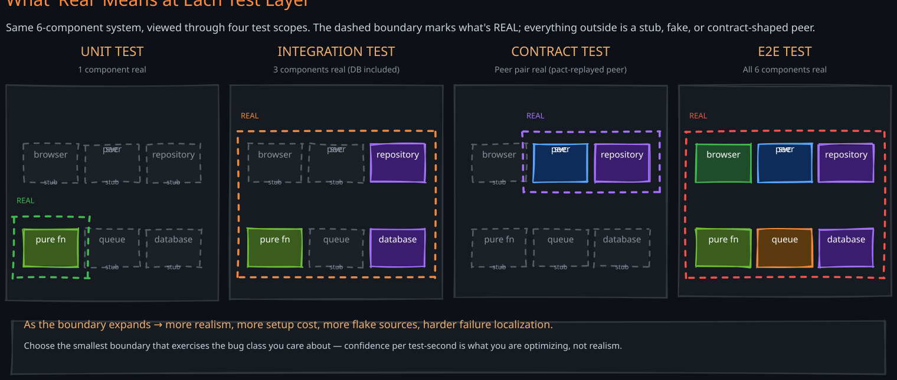
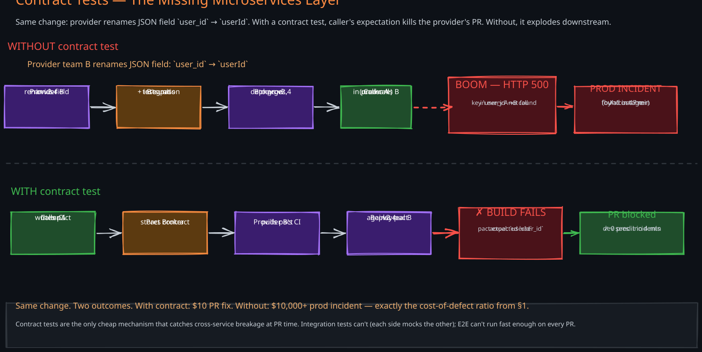
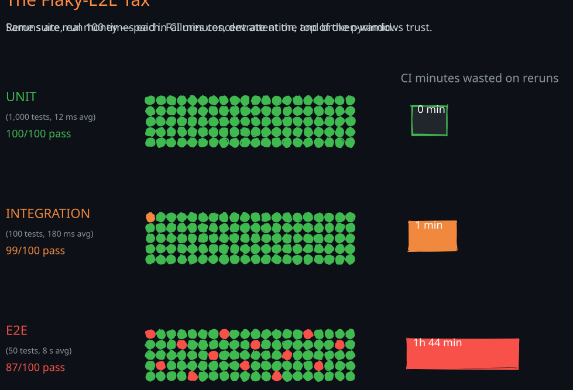
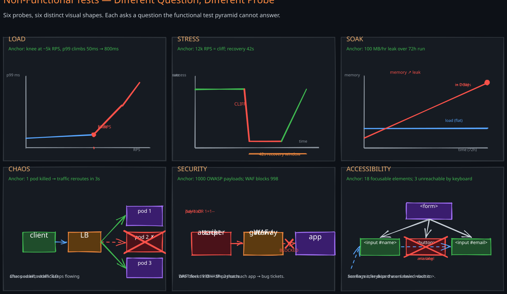

The Story
In 1996, the Ariane 5 rocket exploded 37 seconds after liftoff. The cause was a 64-bit float being converted to a 16-bit integer in the inertial reference system — code reused unchanged from Ariane 4, where the value was always small enough to fit. Engineers had not added a test because, in the Ariane 4 envelope, the conversion was provably safe. Ariane 5’s higher horizontal velocity overflowed the integer, the navigation system crashed, the rocket veered off course, and the self-destruct triggered. $370M of payload, gone in 39 seconds. The bug would have been caught by a single unit test exercising the conversion under Ariane 5’s flight parameters — or by a single integration test against the new flight profile, or by a single end-to-end simulator run. None existed for that code path because “it worked on Ariane 4.” Tests are not about proving the code is correct. They are the cheapest mechanism we have for discovering when our assumptions stop holding.
1. Why Tests Exist — The Cost-of-Defect Curve
You have written tests because someone told you to, or because TDD blogs say to, or because you got burned once. The deeper reason is economic: the cost of fixing a bug grows exponentially with the stage at which it is discovered.
Rough order-of-magnitude numbers, well-established across software engineering literature (Ch01-Reliable-Scalable-Maintainable cites similar):
- Found in dev (the engineer notices on their own machine) — ~$1. A keystroke and a re-run.
- Found in PR review or CI — ~$10. A back-and-forth, a context switch, a force-push.
- Found in staging or pre-prod — ~$100. A revert or hotfix, a release-train delay, sometimes a war-room meeting.
- Found in production by a customer — 10,000,000+. Incident response, postmortem, customer compensation, regulatory exposure, reputation loss. Knight Capital lost $440M in 45 minutes from one untested deployment.
The ratio is roughly 10x per stage. This single fact justifies the entire testing discipline. Every test you write is a mechanism that shifts the discovery of some class of bug from a later, more expensive stage to an earlier, cheaper one.
Two consequences follow:
- Fast feedback dominates thoroughness. A test that runs in 50 ms and catches 30% of regressions beats a test that runs in 5 minutes and catches 95%, because the fast test runs on every keystroke and the slow one runs once a day. The cost-of-defect curve rewards latency to detection more than it rewards detection probability.
- The portfolio shape matters. Different test types catch different bug classes at different costs. A coherent strategy mixes them deliberately — which leads to the test pyramid.

2. The Functional Test Taxonomy and the Pyramid
1. The Five Layers by Scope
Functional tests can be ordered by how much of the system they exercise:
- Unit — one function, one class, or one tightly-cohesive module. Everything outside the system under test (SUT) is replaced with a test double. Sub-millisecond per test.
- Integration — the SUT plus one real collaborator (database, queue, file system, real HTTP server). Tens to hundreds of milliseconds.
- Contract — the wire-level agreement between two services. Each side runs the test against a synthesized peer that follows the agreed contract. Seconds.
- End-to-end (E2E) — the full deployed system exercised through its outermost interface (browser, API gateway, mobile app). Tens of seconds to minutes.
- Exploratory / manual — a human probing the system, hypothesis-driven. Hours.
Each layer answers a different question:
- Unit: “does this function compute the right output for these inputs?”
- Integration: “does this code use the database/queue/library correctly?”
- Contract: “does my service still honor the wire format my peer depends on?”
- E2E: “does the user-visible flow still work after I deploy everything together?”
- Manual: “what bugs am I not even looking for?“
2. Why the Pyramid Shape Is Correct
Each layer up the pyramid is:
- More expensive to write — more setup, more environment configuration, more test data.
- Slower to run — network I/O, browser warmup, container boot.
- More flaky — more moving parts means more sources of timing, ordering, and shared-state non-determinism.
- Worse at localizing failure — a failing unit test points at one function; a failing E2E test could be in any of fifty services.
- Higher blast radius per failure — one flaky E2E blocks the entire pipeline; one flaky unit test only blocks its module.
These properties multiply. A test that is 100x slower, 10x flakier, and 10x harder to debug is not 1000x worse — it is categorically a different kind of investment. The pyramid shape (many cheap tests at the base, few expensive ones at the apex) is the cost-minimizing shape for the same target confidence.
3. The Ice-Cream Cone Anti-Pattern
Teams that skip the discipline of writing unit tests but feel guilty about it often compensate by piling up E2E tests. The shape inverts: a wide top of fragile, slow E2E tests, a thin middle, a starving base of unit tests. Symptoms:
- CI takes 45 minutes to an hour per run.
- Flake rate is 5-15%, requiring routine “re-run failed jobs” rituals.
- Engineers learn to ignore CI failures because they are usually environmental.
- Bug reports surface things a unit test would have caught in seconds.
- The first sprint after staffing a new team member is spent teaching them which tests to retry vs. trust.
The cone is not a typology; it is a failure mode. Recognizing it is the first step to flipping it back.

3. Unit Tests — Testing in Isolation
1. What “Isolation” Means
The system under test (SUT) is the code you are asserting on. Everything else is a collaborator. Isolation means the test’s behavior depends only on the SUT, not on collaborators’ behavior, configuration, or state.
You isolate by replacing collaborators with test doubles — substitute objects that the SUT can call without triggering the real collaborator’s side effects.
2. The Meszaros Test-Double Family
Gerard Meszaros’s xUnit Test Patterns names five varieties. You have probably written all of them without knowing the names:
- Dummy — an object passed only to satisfy a parameter list. Never used by the SUT. Example:
new User(null, null)when only theidfield matters. - Stub — returns canned answers to calls the SUT makes. Example:
when(repo.findById(42)).thenReturn(user). Provides indirect input to the SUT. - Fake — a working implementation that takes a shortcut. The canonical example is an in-memory
Mapreplacing a real database — it really stores and retrieves, just not durably. Fakes scale better than long chains of stubs. - Spy — a stub that also records how it was called, so the test can assert on the calls afterward.
- Mock — pre-programmed with expectations that must be met. The test fails if the SUT doesn’t call the mock in the expected way. Strict mocks make the test brittle to refactoring; use them sparingly.
The trap most engineers fall into is using “mock” as a generic verb covering all five. The distinction matters because it controls what the test asserts on: stubs assert on the SUT’s output; mocks assert on the SUT’s interactions. A stub-heavy test survives refactors. A mock-heavy test breaks on any change to internal call patterns, even when behavior is correct.
3. What to Mock and What Not To
A useful heuristic: mock collaborators you don’t own. Network, file system, time, randomness, third-party libraries. Do not mock your own pure functions, value objects, or domain logic — if the SUT calls a pure helper, let it call the real helper. Mocking your own code produces tests that pass without exercising real behavior, and tests so coupled to internals that they break on every refactor (the “mock cathedrals” anti-pattern in §10).
4. The Test Pyramid’s Base in Practice
A healthy codebase has thousands of unit tests running in under a minute. Each test name reads like a sentence describing the behavior under test: withdraw_fails_when_balance_is_below_amount. The test body has three blocks: arrange (set up the SUT and inputs), act (call the SUT once), assert (verify outputs or interactions). The “one assertion per test” rule is a guideline, not a law — the deeper rule is “one behavior per test.”

4. Integration Tests — Crossing One Boundary
An integration test exercises the SUT against one real collaborator — typically a real database, message queue, file system, or HTTP server — to verify that the code uses that collaborator correctly. Unit tests catch logic bugs; integration tests catch contract bugs with the outside world (wrong SQL, missing migration, queue serialization mismatch, S3 IAM permission).
Three patterns for running them:
- In-process fake of the dependency. SQLite instead of Postgres, an in-memory queue instead of Kafka. Fast (no container boot), but the fake’s behavior may diverge from the real thing in subtle ways — SQLite’s transaction semantics differ from Postgres’s, in-memory queues don’t model partition rebalancing.
- Testcontainers (real dependency in a container). Spin up a real Postgres/Kafka/Redis container per test class. Slower (5-30 seconds per container boot, amortized across tests), but you are testing against the actual production wire protocol. This is the modern default for most teams.
- Shared dev environment. A long-lived dev database everyone shares. Fast and convenient at first, but tests interfere with each other, state leaks between runs, and CI becomes nondeterministic. Anti-pattern in 2026 — only acceptable for proprietary systems with no container image.
The hot tradeoff is per-test isolation. Two approaches:
- Transaction rollback per test. Begin a transaction in setup, roll back in teardown. Fast (no DB recreation), but tests cannot exercise code that itself commits or relies on visibility outside the transaction.
- Container or schema per test class. Slower but fully isolated. Required for tests that span their own transactions.
Integration tests sit at 10-30% of total test count in a healthy codebase. They are slower and flakier than units but indispensable — a unit-test-only codebase ships with confidence in the logic and zero confidence in the persistence layer.
5. Contract Tests — The Missing Layer for Microservices
This is the layer most engineers have never explicitly written, even when they need it. The problem:
- Service A (the caller) makes HTTP/gRPC requests to service B (the provider).
- Service A has integration tests that mock B’s responses — fast and isolated, but the mock could lie.
- Service B has integration tests that exercise its handlers — fast and isolated, but it doesn’t know what shape of request A sends.
- The teams ship independently. B’s team renames a JSON field on Tuesday. A’s mock still returns the old shape, so A’s tests pass. A’s prod traffic to B starts failing on Tuesday afternoon.
E2E tests would catch this — but you would need to deploy A and B together to staging, which means coordinated release trains, which is what microservices were supposed to eliminate. Integration tests cannot catch it because each service tests in isolation. There is a missing layer.
A note on naming. The Pact community uses “consumer” for the calling side and “provider” for the API-serving side — inherited from RESTful HTTP vocabulary, not from the event-driven world’s producer/consumer pair. To avoid that collision, this note uses caller and provider in prose; treat “caller” and Pact’s “consumer” as interchangeable.
1. Caller-Driven Contracts (Pact)
The Pact pattern (officially “consumer-driven contracts”), used by tools like Pact and Spring Cloud Contract:
- Caller writes the contract. In A’s test suite, the engineer writes “when I call
GET /users/42on B, I expect a 200 with{ user_id, name, email }.” The Pact library intercepts the outgoing HTTP call, records the request/response pair as a JSON contract file (“pact”), and serves the expected response so A’s tests can proceed normally. - Pact published to a broker. A’s CI uploads the pact JSON to a central broker keyed by
(caller, provider). - Provider’s CI verifies the pact. B’s CI pulls all pacts published by its callers, spins up B in test mode, replays each pact’s request against the real B, and asserts B’s response matches the pact’s expectation. If any pact fails, B’s build fails — before the breaking change merges to main.
- The broker shows the dependency matrix. Which callers depend on which provider endpoints; which contracts are passing for which deployed versions. This becomes the source of truth for “can I safely deploy B v2.4 to prod?”
The mechanism shifts breakage detection from “production at 3am” to “B’s PR CI” — exactly the cost-of-defect math from §1, applied to a class of bug that nothing else catches cheaply.
2. When Contract Tests Are Worth Setting Up
Worth it when :
- 3+ services call a single provider
- Teams ship independently
- Provider’s changes routinely break callers.
Not worth it when:
- A single team owns both sides (just write E2E tests across both)
- APIs are versioned and the old version is preserved indefinitely (callers pin a version)
- The protocol is a strongly-typed RPC like gRPC with
buf breakingin CI catching schema breakage statically — though even then, semantic breakage (same shape, changed meaning) only contract tests catch.
The microservices ecosystem (07-Microservices) made contract tests load-bearing. If you have microservices and no contract tests, you have a production-bug latency bomb.

6. End-to-End Tests — The Most Expensive Insurance
E2E tests exercise the system through its outermost interface: a browser driver (Selenium, Playwright, Cypress) clicking through a UI; a mobile UI automation framework (Espresso, XCUITest); or a black-box API client hitting a fully-deployed stack including all backing services. Nothing is mocked.
1. Why E2E Tests Flake
E2E tests are an order of magnitude more likely to fail intermittently than any other test type, for structural reasons that cannot be fully engineered away:
- Timing sensitivity. Async UIs render at non-deterministic moments. “Wait for the button to appear” requires polling with timeouts; the timeout is a flake budget.
- Shared state. A test database used by ten E2E tests in parallel sees concurrent reads and writes that no isolation mechanism fully prevents.
- Third-party dependencies. Payment sandboxes, OAuth providers, geolocation APIs — all have their own uptime, none is 100%.
- Environment drift. Staging is almost like prod, but not exactly. The difference accumulates.
- Multi-process clock skew, GC pauses, retried network calls — the entire surface of distributed systems primitives (01-Primitives) becomes a flake source.
A 1% per-test flake rate compounds: a suite of 100 E2E tests has a 63% chance of at least one flake per run.
2. The 70/20/10 Heuristic and What E2E Is For
A rough portfolio guideline often cited: 70% unit, 20% integration (including contract), 10% E2E. The exact numbers are not magic — the principle is that E2E should be a small set of irreducible cross-system journeys, not a coverage tool. Use E2E for:
- Signup, login, checkout, payment — the critical paths whose failure costs the most.
- Cross-service flows that no other layer can cover — e.g., “user clicks checkout, order is created, inventory is decremented, email is sent, webhook fires.”
- Browser-specific concerns — CSP, cookies, CORS, redirect chains — where the only way to be sure is to run a real browser.
Do not use E2E for: input validation rules (use unit tests), database CRUD correctness (use integration tests), edge cases in business logic (use unit tests). The cost-of-flake makes wide E2E coverage a net negative — the false-positive rate exceeds the bug-catch rate.
3. Making E2E Less Painful
Strategies that work:
- Run E2E in parallel across a sharded grid (BrowserStack, Sauce Labs, in-house Selenium grid). Cuts wall time but not cost.
- Quarantine flaky tests automatically — tag any test that fails-then-passes-on-retry, demote it from “blocking” to “tracking,” and create a ticket. Prevents the broken-windows effect.
- Retry once, fail loudly on second failure. A single retry catches transient infra flakes; allowing more disguises real intermittent bugs.
- Synthetic monitoring in prod. A small set of E2E tests running every few minutes against production. Catches the bugs CI E2E missed, and provides liveness signal complementary to metrics (01-Observability).

7. Non-Functional Tests — Different Question, Different Tool
Functional tests answer “does the system produce the right output?” Non-functional tests answer “does the system meet its other promises — latency, throughput, durability, security, accessibility?” Each non-functional category probes a different dimension of system behavior.

1. Load Testing — Finding the Knee
Ramp synthetic traffic from 0 to expected peak. Watch latency curves. A healthy system stays flat through expected load and degrades gracefully past it; an unhealthy one shows a “knee” where latency suddenly explodes, often well before the CPU is saturated — usually due to a queue, lock, or connection pool. Tools: Locust, k6, Gatling, JMeter. The output you care about is the shape of the latency-vs-RPS curve, not just the peak number.
2. Stress Testing — Finding the Cliff and Measuring Recovery
Push past expected load until something breaks. Then stop pushing and measure how long the system takes to recover. A system that recovers in 30 seconds is healthy; one that requires manual intervention is fragile. Stress tests reveal cascading failures, retry storms, and broken backpressure that load tests miss.
3. Soak Testing — Finding Leaks
Run constant moderate load for 24-72 hours. Watch memory, file descriptors, connections, disk usage. Any line that climbs without bounding is a leak. Soak tests are the only way to catch slow-bleed problems — memory leaks that take 12 hours to OOM, log-rotation failures, connection pool exhaustion, certificate expiry handling.
4. Chaos Testing — Finding Missing Recovery
Inject failures into production (or production-like environments) and verify the system handles them: kill a pod, partition a network, fill a disk, throttle a database, advance the clock. Pioneered by Netflix’s Chaos Monkey, now a discipline (Chaos Mesh, Litmus, Gremlin). The bug class chaos catches: “we wrote the failover code but never confirmed it works.”
5. Security Testing — Finding Injectable Surfaces
SAST (static analysis on source code) catches code patterns known to be unsafe — string concatenation in SQL, missing input validation. DAST (dynamic analysis against a running app) probes the deployed app with malicious inputs — OWASP ZAP, Burp Suite. Penetration testing is the human-driven equivalent. The unique value of security tests is that they probe for adversarial inputs that functional tests don’t think to try.
6. Accessibility Testing — Finding Unreachable Controls
Automated tools (axe, Lighthouse, Pa11y) check WCAG conformance — color contrast, focus order, ARIA labels, keyboard navigability. They catch maybe 30% of real accessibility issues; the rest requires manual testing with actual screen readers (NVDA, JAWS, VoiceOver) and keyboard-only use. Often skipped by engineering teams until a lawsuit forces attention — which is precisely the late-discovery curve from §1.
7. Mutation Testing — Testing the Tests
A meta-test. The mutation tool (PIT for Java, Stryker for JS/Python) modifies your source code in small ways — flips > to <, removes a return, replaces + with - — and runs your test suite against each mutant. If a mutant survives (tests still pass), your tests didn’t actually cover that code’s behavior. Surfaces the difference between “100% line coverage” and “100% behavior coverage” — usually a sobering gap. Expensive (each mutant requires a full test run); usually run nightly on a sample, not per-PR.
9. Where Each Test Type Runs — The CI/CD Gates
A coherent strategy maps each test type to a specific point in the path from git push to production. Each gate has its own latency budget and failure consequence.
1. Pre-Commit (Local, Engineer’s Machine)
- Linters, formatters, type checkers.
- Fast unit tests for the changed module (
pytest path/to/changed_module). - Budget: < 5 seconds. If it’s slower, engineers skip it.
- Failure consequence: the commit is blocked locally.
2. PR / Pre-Merge CI
- Full unit test suite.
- Full integration test suite (Testcontainers).
- Contract tests if a contract changed.
- Linter, type checker, security SAST.
- Budget: 5-15 minutes. Beyond that, engineers context-switch and the PR sits in review limbo.
- Failure consequence: PR is blocked from merging.
3. Post-Merge / Pre-Deploy (Main Branch)
- Same as PR, plus: long-running integration tests, mutation testing sample, performance regression smoke (e.g., one load-test run, asserting no >5% regression vs. last week’s baseline).
- Budget: 30 minutes.
- Failure consequence: deploy is blocked; previous green build is the candidate.
4. Pre-Deploy / Staging
- Smoke E2E suite (10-30 most critical user journeys).
- Synthetic data load test.
- Budget: 15 minutes.
- Failure consequence: rollback the staging deploy, do not promote.
5. Post-Deploy / Canary in Production
- Synthetic E2E monitors running every 1-5 minutes from outside the network.
- Production canary cohort (1-5% traffic) with metric-based health checks: error rate, p99 latency, business KPIs (cf. 01-Observability — canary health is a test).
- Chaos experiments on a recurring schedule (weekly, monthly).
- Failure consequence: automated rollback of the canary; alert the on-call.
Each gate filters bugs that escaped the previous one. Unit tests catch most. Integration catches the ones that crossed a boundary. Contract catches the ones that crossed a service line. Pre-deploy E2E catches what slipped through staging. Synthetic monitoring catches what staging didn’t have. By the time a bug reaches a customer, it has survived four gates — which is also why customer-found bugs are 10,000x more expensive (§1): they represent four layers of testing failure simultaneously.
10. Anti-Patterns — How to Recognize When the Strategy Has Drifted
Each of these has shipped in real codebases. Most are seductive because they feel like they are improving the situation.
1. The Ice-Cream Cone (covered in §2)
Heavy E2E, anemic unit. CI takes 45 minutes, flake rate is 10%. Fix: invest in unit test refactor as a multi-quarter project, ratchet down E2E count as unit coverage climbs.
2. The Coverage Cargo Cult
“We require 80% line coverage to merge.” Engineers write tests that exercise lines without asserting on behavior. Coverage tools report green; mutation testing scores reveal that 40% of “covered” code is not actually tested. Fix: replace line-coverage gates with mutation-score gates; allow human judgment for coverage exceptions.
3. Snapshot Test Rot
Snapshot tests record the output of a function and assert it matches on subsequent runs. They are easy to write and feel comprehensive. Over time, snapshots become impossible to review (1000-line diffs in PRs), so engineers reflexively run “update snapshots” without reading the diff. The test becomes a tautology: “the output is what it was last time I ran it.” Fix: use snapshot tests only for outputs that genuinely should never change (rendered HTML for an unchanged component, generated SQL for a stable query). Forbid them for outputs that evolve.
4. Mock Cathedrals
A 200-line unit test setting up 15 mocks with elaborate when().thenReturn() chains. The test is testing the mock configuration, not the SUT’s behavior. Refactoring the SUT breaks the test even when behavior is correct. Fix: use stubs and fakes instead of mocks; refactor the SUT to have fewer collaborators; if you cannot, write an integration test instead.
5. The Prod-Mirror Obsession
“Our tests don’t catch bugs because staging isn’t exactly like prod — we need a perfect copy of prod.” Months of effort, infinite cost, never quite mirroring. The mismatch is not the root cause; the lack of contract tests and synthetic monitoring is. Fix: invest the mirror-engineering budget in contract tests + production synthetic monitors instead — the cost-of-defect math wins.
6. Test-After-Bug-Shipped
Bug surfaces in production. Engineer writes a unit test that reproduces it. Lands the fix + test in the same PR. The test is good, but its existence proves the pre-shipping test strategy missed the bug class. Postmortems should not ask “did you add a regression test?” but “what test type would have caught this class of bug, and do we have a gap there?“
7. Testing Implementation Instead of Behavior
Test asserts that the SUT calls userRepository.save() exactly twice with specific arguments. The test passes. Engineer refactors to call save() once with a batch; behavior is identical and better. The test breaks. The test was coupled to the how, not the what. Fix: assert on observable outcomes (the saved user is retrievable; the response body has the expected shape), not on internal call sequences.
Revision Summary
- Tests exist because of the cost-of-defect curve — bugs are ~10x more expensive at each subsequent discovery stage. Tests shift discovery left.
- The pyramid (many unit, fewer integration, fewer E2E) is the cost-optimal shape because cost, speed, flakiness, and failure-localization properties all worsen monotonically up the pyramid.
- The ice-cream cone is the named anti-pattern: heavy E2E, anemic unit, 45-minute flaky CI, customer-found bugs that unit tests would have caught.
- Test doubles split into 5 kinds (Meszaros): dummy, stub, fake, spy, mock. Stubs + fakes are usually preferable; mocks couple tests to implementation.
- Heuristic: mock collaborators you don’t own. Don’t mock your own pure functions or domain logic.
- Integration tests cross one boundary — DB, queue, file system. Testcontainers is the modern default; transaction-rollback-per-test is fastest but limits what you can exercise.
- Contract tests (Pact) are the missing microservices layer. Caller writes expectation, broker stores it, provider’s CI verifies before merge. The only cheap mechanism for catching cross-service breaking changes.
- E2E tests are structurally flaky. Use them only for irreducible cross-system journeys (signup, checkout, payment), not as a coverage tool. ~10% of total test count.
- Non-functional tests probe orthogonal dimensions: load (knee), stress (cliff + recovery), soak (leaks), chaos (missing recovery), security (adversarial input), accessibility (unreachable controls), mutation (test-the-tests).
- Cost / feedback / confidence triangle: you can pick two. Forces a portfolio strategy. “100% coverage” optimizes one number at the expense of two others.
- Each test type runs at a specific CI/CD gate with a specific latency budget. Customer-found bugs represent failure across four gates simultaneously — which is why they cost 10,000x.
- Anti-patterns to watch: ice-cream cone, coverage cargo cult, snapshot rot, mock cathedrals, prod-mirror obsession, test-after-bug-shipped reflex, testing implementation instead of behavior.
Deep Understanding Questions
- Your team has 95% line coverage but is hit by three production bugs in a sprint that all live in well-covered code paths. What is the most likely diagnosis, and what test type would catch this class of bug? What metric would you adopt to expose the gap before it ships?
- A teammate proposes a single E2E test that exercises the entire checkout flow with 12 assertions, arguing it replaces 12 separate tests. You disagree. Argue your position from first principles — what specifically goes wrong as this style propagates across the codebase?
- Service A’s unit tests pass, service B’s unit tests pass, both teams’ integration tests pass. After deploy, A’s calls to B return HTTP 500s for a specific field combination. No production-impacting bug existed an hour ago. Walk through what kind of test would have caught this, why each of the existing tests didn’t, and what would have to change about the team’s workflow for that test to exist.
- You inherit a codebase with 4,000 unit tests, 800 integration tests, and 200 E2E tests. CI runs in 22 minutes and is rarely flaky. Six months later, CI takes 55 minutes and flakes 8% of the time. Without running any code, list five hypotheses about what changed — and what data you would gather to confirm each.
- Mocks vs. stubs vs. fakes: design a test for a service that sends a confirmation email after creating a user. Walk through three different choices for handling the email service collaborator and explain which test breaks under which kind of refactor.
- Why does the cost-of-defect curve grow approximately exponentially rather than linearly? Identify three distinct mechanisms that contribute to the exponential growth, and identify one situation in which the growth is not exponential (where the curve flattens).
- Your production system has 50 microservices owned by 10 teams. You are introducing contract tests. Design the rollout strategy: which provider service do you start with, what data would you collect to choose, what failure modes do you expect in the first quarter of adoption, and how would you measure whether the investment is paying off?
- A chaos test kills a Redis cache node mid-traffic. The system continues serving correctly because requests fall through to the database. Performance is acceptable. The test passes. Three months later, in production, a Redis node fails and the database is overwhelmed by the fall-through load. What did the chaos test miss, and what would you add to the test design to catch this class of failure?